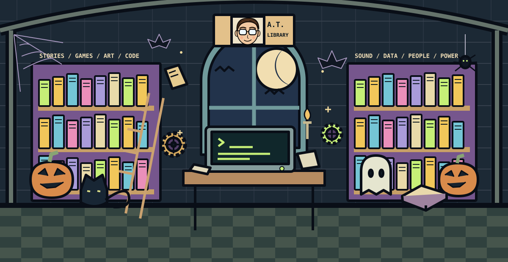
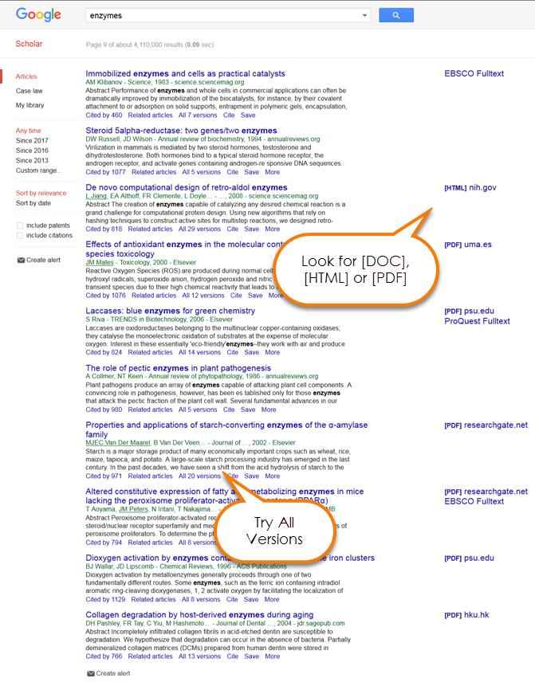
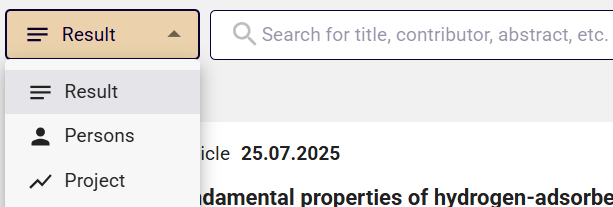
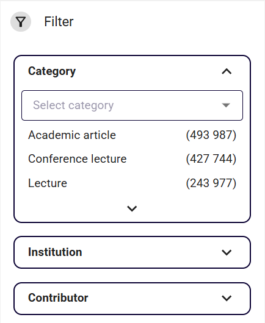
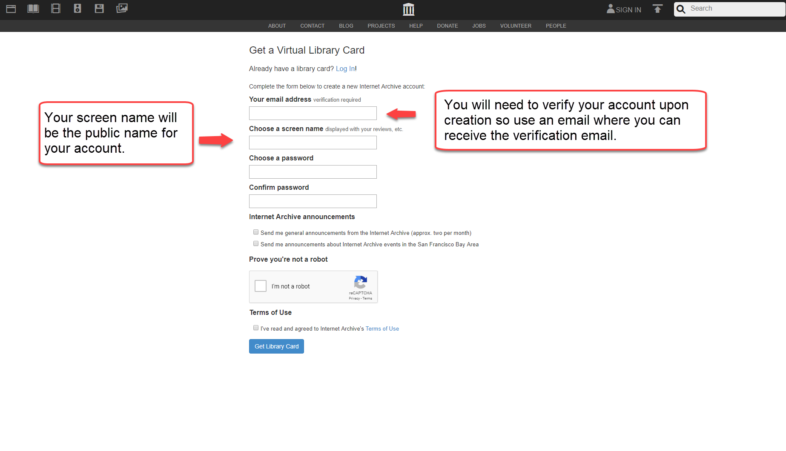
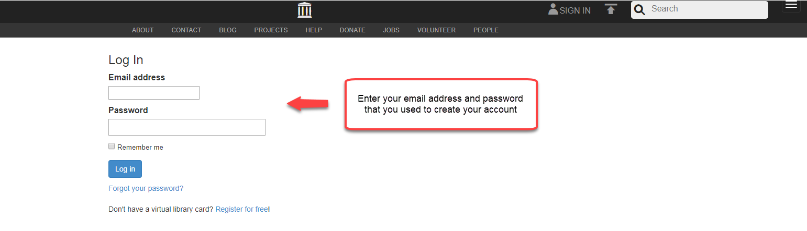
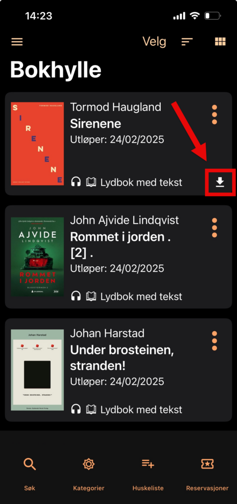
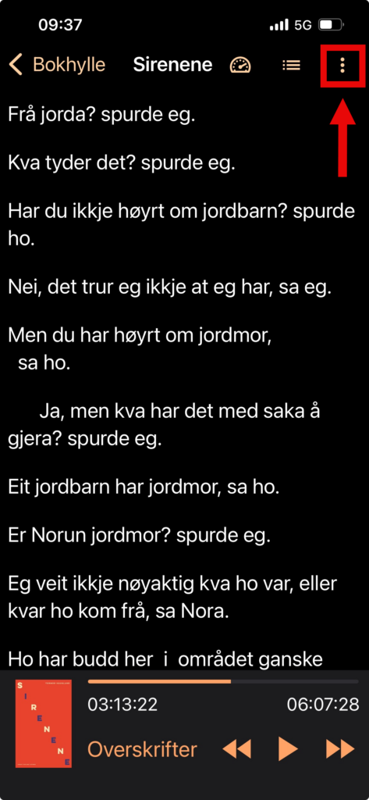

TURING'S LIBRARY / THE SEARCH DESK
Follow your idea.
Find a source.
Made something? Bring one question about it. Start with two or three search words, find one useful source, then take the idea back into your work.
My game lets someone choose a path.
Try player agency games. For a story, try interactive fiction choice. Add belonging if that is your theme.

PICK ONE DOOR. YOU DO NOT NEED ALL FIVE.
What do you need right now?
Service links open in another tab so these instructions stay here. Screenshots come from the linked official guides, not a live capture of your account. Some show older layouts.
01THE ARTICLE DESKSearch Google Scholar
+
Search Google Scholar
Account: begin with a public search. A Google account is used for personal features such as your saved library.
- Search a small question. Start with two or three terms. Too many results? Add a theme. Nothing useful? Remove a word or try a synonym.
- Read one result. Check title, authors, year and publication. Open the title and read the abstract, the short summary. Does it address your question?
- Find the actual text. Try a [PDF] or [HTML] link beside the result. No file? Select All versions. For library access, follow the UiB route below.
- Follow a useful lead. Cited by finds works citing this source; Related articles finds similar material. Neither is a quality score. Read the source before citing it.
Need an exact title? Put it in quotation marks. Newer research? Use the year filters. Older work can still be relevant.

02SIKT'S NATIONAL RESEARCH ARCHIVEFind research in NVA
+
Find research in NVA
Account: no login needed to search NVA.
Open NVA at nva.sikt.no ↗ · About Sikt ↗
- Choose what you want to find. Beside the search box, choose Result for publications, Persons for researchers or Project for research projects.
- Type a title, theme or name. Try
game interfaces. Or choose Persons and tryKristine Jørgensen, then check the institution on the matching profile.

- Narrow the results. Open Filter. Choose a relevant category, such as Academic article. Add an institution if useful. Use the file filter when you need an uploaded text.
- Open a publication record. Check author, year, type and summary. Open an available file or follow the publication link. Some records have no readable file.
- Keep a route back. Save the record link or DOI, then read the text. A record in NVA alone does not establish peer review.
Sikt's full search instructions ↗ · Illustrated English guide (.docx) ↗

03YOUR UNIVERSITY LIBRARYFind a book. Open the full text.
+
Find a book. Open the full text.
Account: UiB / Feide for library borrowing and reservations. Searching Oria is open to everyone.
- Open UiB's catalogue. Go to UiB Oria ↗. Type the title, author or a few topic words. Select a result.
- Physical book? Find Get It / Finn og bestill. Check the library, availability and complete shelf mark. Keep the record on your phone, then follow the shelf signs. Show it to library staff if you cannot find the book.
- Borrow or reserve? Use Sign in / Logg på, choose UiB / Feide when offered, and use your UiB account. Follow the record's request options.
- Article or e-book? Follow the record's full-text link. On a private device, connect to UiB's VPN ↗ for licensed material, then reopen the link. UiB says eduroam alone does not give licence access.
Open your course and its reading-list link, then choose the title. MittUiB is the course platform. The library provides access to the book or article.
UiB: find your course reading list ↗UiB's real screenshot walkthrough: find physical materials ↗ · UiB login and access instructions ↗
The screenshot walkthrough opens UiB's own guide. If access still fails, show the title or DOI to library staff. An Oria record does not guarantee full text.
Back to the shelves and the book's index →04THE DIGITISED COLLECTIONUse Internet Archive
+
Use Internet Archive
Internet Archive has its own account. You do not log in through MittUiB or Feide. Using a student email address does not give UiB subscription access here.
- Search first. Open archive.org ↗, search a title or author, and open an item. Check the edition and what is actually readable.
- Need an account? Follow Sign up ↗. Enter an email you can open, choose a public screen name and an Internet Archive password. Complete verification and confirm the email when asked.

- Return and log in. Use Log In ↗ with your Internet Archive account.
- Read what is available. Follow the item's reading or borrowing controls. Borrow Unavailable means the book cannot currently be borrowed. Try UiB Oria for another route.

Official account guide ↗ · Why borrowing may be unavailable ↗
Use the edition you actually read →05THE LISTENING ROOMRead with the Tibi app
+
Read with the Tibi app
Account: a Tibi borrower number and PIN. A UiB student account alone does not give access.
Tibi is adapted literature for people who have difficulty reading visual text because of a disability or illness. Check who can borrow ↗ and apply through Bli låner at tibi.no ↗ if this fits you.
- Install Tibi. Open the official iOS App Store ↗ or Android Google Play ↗ listing.
- Log in. Use your Tibi borrower number and PIN, supplied through registration. For a forgotten PIN, follow the reset instructions in Tibi's app help ↗.
- Search and borrow. Choose Søk, type a title, author or theme, open a book and choose Lån boka. Available books appear in Bokhylle.
- Download and listen. On the shelf, open the book's three dots, choose Last ned and confirm. An arrow marks the downloaded book. Tap the book to play it offline.


Some study books have restricted access. Tibi's student guide ↗ explains availability and how to identify the adapted edition for your citation.
Bring the idea you listened to back to your work →BACK AT THE MAKING TABLE
One source. One new way to look.
Read or listen to the relevant argument in context. What does it help you understand about your creation? Try a change, question a choice or explain an effect you can now see.
Keep the author, year, title and the edition you used. For an article, also keep the journal, volume, issue, pages and DOI. Record the page or locator for the passage you use. Check the publication type and the journal's review policy if you need a peer-reviewed article.